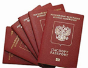

Бесплатные юридические консультации и помощь в получении паспорта, загранпаспорта,РВП, вида на жмтельство, гражданства РФ
Внутренний паспорт гражданина РФ - все вопросы и ответы про российский общегражданский паспорт на сайте YouPassport.ru
Паспорт гражданина РФ – документ, который удостоверяет личность на территории Российской Федерации. Выдается он при достижении 14 лет, а до этого возраста основным документом является свидетельство о рождении. Ранее он выдавался МВД России, теперь же такую обязанность на себя взяло отделение ФМС и не только. Например, за заменой паспорта в связи с замужеством или в любом другом случае, можно обратиться в МФЦ (многофункциональный центр) или подать заявление посредством интернета, через единый портал Госуслуг.
Зачем нужен паспорт Российской Федерации – человек приобретает массу возможностей имея этот документ. Потеряв его, у него может возникнуть много проблем, даже если у него есть загранпаспорт или водительское удостоверение, которое сможет идентифицировать его личность.
Мы постарались собрать в данном проекте все самое интересное и неизведанное. Каждый паспорт содержит в себе серию и номер, ФИО владельца, фотографию, год рождения и другие данные. Но есть и скрытая информация. Например, национальность в паспорте Российской Федерации не указывается отдельной строчкой, а вот где именно она скрывается, мы вам расскажем в одной из статей. Так же вы узнаете о том, какой шрифт используется в паспорте РФ, размер паспорта РФ в см. и вы сможете отличить поддельный документ от подлинника, взглянув на образец гражданского паспорта РФ.
Наверняка каждый из вас задавался вопросом, из чего формируется серия и номер паспорта. Мы разобрались в этой ситуации и рады вам предложить к прочтению данную информацию, приложив при этом фото того, как выглядит паспорт гражданина РФ.
Так же, вы сможете ознакомиться с процессом получения паспорта в 14 лет, его замены в 20 и 45 лет и многими другими ситуациями. В каждой статье мы приложили бланк на внутренний паспорт гражданина РФ, чтобы вы могли его заполнить самостоятельно и скачать. Кроме этого, нами указаны все ваши права, подкрепленные законами и предупреждения о возможных подводных камнях. К примеру не все знают, что во время оформления нового паспорта, вы можете запросить изготовление документа заменяющего паспорт гражданина России.
- Замена паспорта гражданина РФ (общие сведения)
- Замена паспорта РФ при порче
- Получение паспорта РФ в 14 лет
- Замена паспорта РФ в 20 лет
- Замена паспорта РФ в 45 лет
Паспорт России нового образца с 2015 года появится в нашем обиходе. А как выглядит российский паспорт нового образца? Выглядеть он будет как пластиковая карточка со встроенным чипом. Обмен бумажных паспортов на пластиковые пока что не обязателен, так как не везде есть аппараты, позволяющие его считать. Но заменив его вы получите ряд преимуществ: заказывать и получать услуги через интернет, вы его не порвете, занимает мало места. Для подключения его к компьютеру понадобится всего лишь небольшой переходник, в народе именуемый как картридер. Так же мы приложили образец паспорта гражданина РФ нового образца для визуального ознакомления.
Если у вас возникнут какие-либо вопросы, касающиеся паспорта гражданина России с 2015 года или привычного бумажного паспорта, советуем обратиться в нашу бесплатную консультацию. Специалисты в юридической области помогут вам разобраться в той или иной ситуации и предоставят исчерпывающий ответ. Не стоит удивляться тому, что мы предоставляем бесплатную консультацию. В случае если вас не устроят наши услуги, вы можете обратиться за помощью в другую фирму.